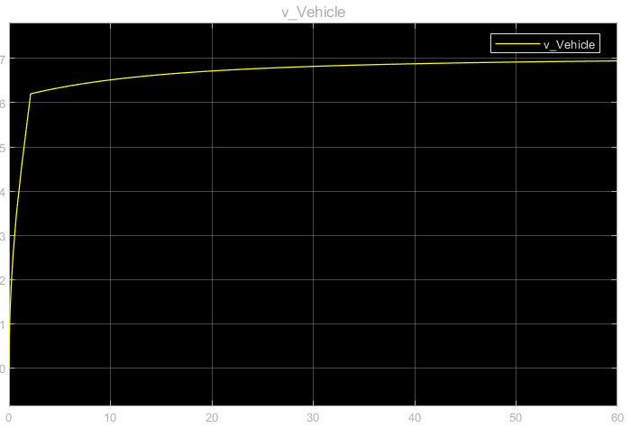

PID Controller Velocity Response (V3–V5)
Nearly constant speed behavior
 Burn-Coast Velocity Response (V6)
Realistic oscillating speed profile
Burn-Coast Velocity Response (V6)
Realistic oscillating speed profile
Realistic burn-coast driver strategy replacing PID cruise control behavior.
Version 6 represents a major correction in the simulation philosophy. Earlier versions used PID control to regulate vehicle speed, which produced smooth cruise-control behavior. While stable, this did not represent the real Shell Eco-Marathon driving strategy.
Real competition vehicles operate using a burn-and-coast strategy, where the engine runs at high efficiency during short bursts followed by long coasting periods with zero fuel consumption.
Version 6 removes the PID controller and replaces it with a pure threshold-based control system that produces realistic pulsed throttle behavior.
Earlier PID-controlled simulations produced nearly constant velocity. The burn-coast controller produces oscillating velocity between upper and lower thresholds, matching real competition driving.
Burn-Coast Velocity Response (V6)
Realistic oscillating speed profile
Throttle behavior clearly shows the difference between the two control approaches. The PID controller continuously adjusts throttle, while the burn-coast controller produces discrete full-power pulses followed by long coasting intervals.
Version 6 introduced structural improvements to both the DriverStrat and Powertrain subsystems. The driver model was simplified to a pure burn–coast controller, while the powertrain model was updated to use dyno-derived engine torque maps.
 Powertrain V6 with Dyno Torque Map Lookup
Powertrain V6 with Dyno Torque Map Lookup
Throttle is determined entirely by vehicle speed:
This hysteresis behavior prevents rapid switching and creates stable burn-coast cycles.
Representative outputs from the burn-coast simulation are shown below.